爱岗敬业榜
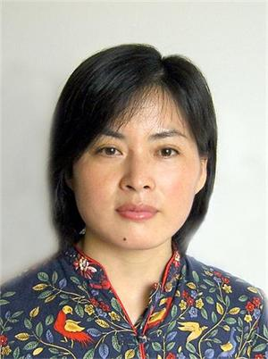
何精英，1994年毕业于南京师范大学。先后获得“南京市优秀青年教师”、“南京市教学先进个人”、“南京市学科带头人”等称号。
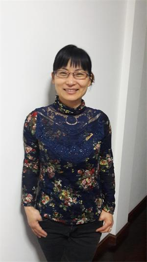
胡凤玉，1992年参加工作，中学高级教师，本科，南师大教育硕士。从教以来曾被评为南京市“优秀青年教师”、区“学科带头人”、区“高中教学先进个人”，校“十佳教师”等称号。多次成功主持市级个人课题，撰写论文也多次获奖或发表。
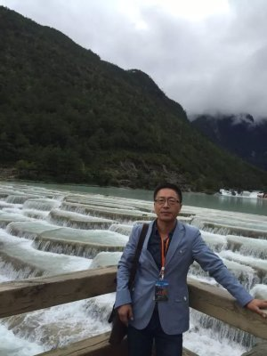
黄杰，中学语文高级教师，曾获“校十佳班主任”“县优秀教育工作者”“南京市普通高中教学先进个人”等称号。
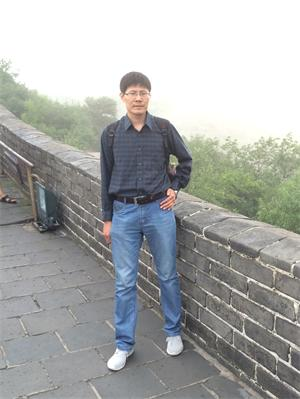
刘希乐,中学一级教师,获得“南京市教学先进个人”“江苏省高考优秀阅卷者” “溧水区第八届优秀青年教师”等称号;发表省级以上论文20余篇(国家核心4篇),结题省级课题一个,区级课题两个.
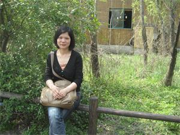
马德珍，2002年工作至今，完成三届初中和三届高中毕业班的政治课教学。一直致力于做一个推动学生成长的老师。
钱春红，1995年毕业于苏州大学，一直从事数学教学，现为中学高级教师。
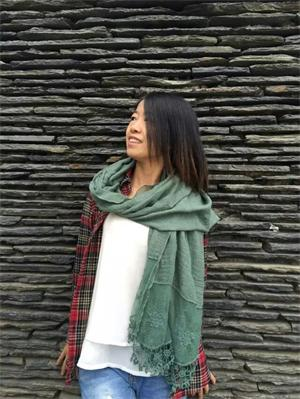
史金花，中学高级教师，区学科带头人，曾获区优秀教育工作者。1996-2004在孔镇中学度任教英语，2004-2012在第一初级中学任教英语，2012-至今在省溧中个初中部担任英语教学。
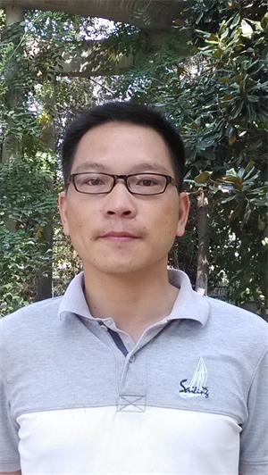
张复海，2005年毕业，同年来校工作至今。完成四届高三教学。校优青，县教学先进个人。论文发表在核心期刊。
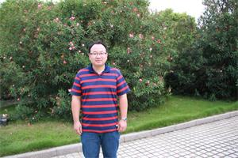
张启水，毕业于苏州大学，在校已任教16年。期间获过南京市教学先进个人、溧水区优秀教育工作者等称号。
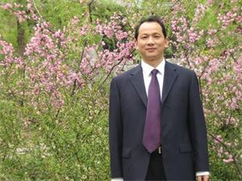
吴仲华，1988年南师大毕业，进入省溧中任教至今，物理高级教师，已教22届初三毕业班，中考和竞赛辅导成绩突出，多次获得国家、省级优秀指导教师，获县“十五”优秀科技人员，县物理学科带头人等荣誉。教育心语：用真心关心学生的成长。
职业道德榜
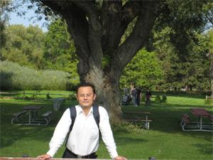
司徒华，1987年7月毕业于苏州大学数学系，从事高中数学教学工作至今，曾被评为全国优秀教师并获奖章，曾获市“行知奖”、市“普通高中教育先进个人”、区“优秀班主任”，多次被评为校优秀班主任等。
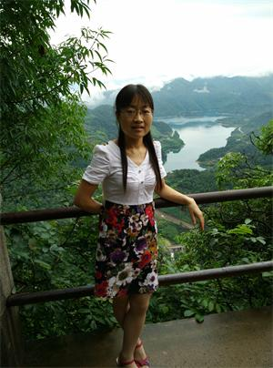
李宽珍，中学高级教师，2002年到江苏省溧水中学工作至今，主要从事高中数学教育教学与研究，发表论文二十余篇，荣获“南京市教学先进个人”，所带班级获“南京市优秀班集体”，校“教科研先进个人”、“十佳班主任”等。
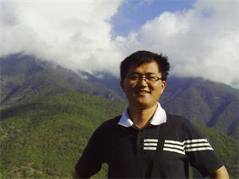
黄东奎，高中历史教师，中学一级。2008年参加工作至今。曾获区“高中历史优秀教学先进个人”，区教育系统优秀共产党员。所带的2014级高一14班荣获2014学年度溧水区“优秀团支部”称号。
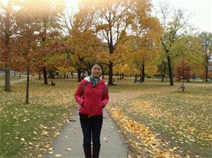
汪石玉，中学二级，一名普通的英语老师，一名年轻的班主任。2007年毕业于江南大学英语师范专业，工作至今。区教坛新秀。
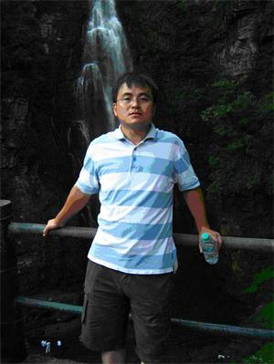
卞维清，中学高级教师，大学本科学历，01年8月参加工作，班主任工作12年，其中5届高三。先后被评为“南京市普通高中教学先进个人”、“南京市优秀班主任”、“县优秀教育工作者”、“县优秀班主任”、“溧水县学科带头人”。
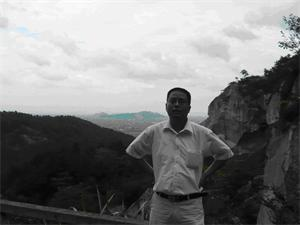
陈根，中学高级教师，中共党员，多年担任初三毕业班语文教学，班主任工作，获多项荣誉，成绩突出。
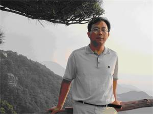
吕春林，中学高级教师，区学科带头人、初中数学教研组长和区初中数学兼职教研员。
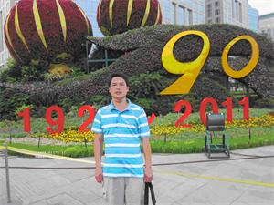
濮方平，中共党员。毕业于南京师范专科学校英语系。获溧水县第二、四届优秀青年教师，溧水县优秀教育工作者，南京市优秀教育工作者等称号。
孙海峰，2004年南京师范大学毕业，曾多次获得校优秀班主任，县教学先进个人。
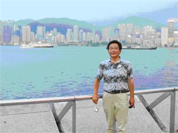
魏宏麟，中高。学科带头人、市区优秀共产党员、师德标兵、市高中教学先进个人、全国优秀科技辅导员.
职业贡献榜
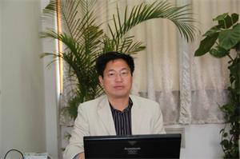
陈兴海，省溧中副校长，江苏省教研先进个人，南京市学科带头人，市高中教学先进个人，市优秀共产党员。
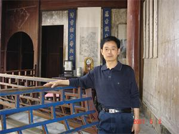
甘德顺，1988年6月扬州大学数学系本科毕业，中学高级教师。工作成绩突出，多次被评为“县优秀教育工作者”、“县教育系统优秀党员”、“区优秀班主任”、“区教育先进个人”、“市优秀教育工作者”，“市普教教学先进个人”、校“突出贡献奖”。
徐茂炳，2004年本科毕业，担任班主任工作11年。2011年获“南京市第七届优秀青年教师”称号。
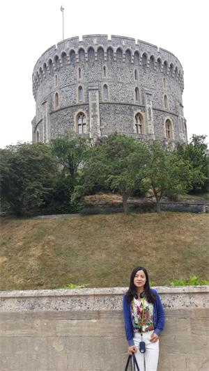
李素琴，中学高级教师，考试竞赛处主任兼教学处副主任。南京市教育先进个人，区优秀青年教师，区优秀教育工作者，区优秀共产党员，区优秀班主任。
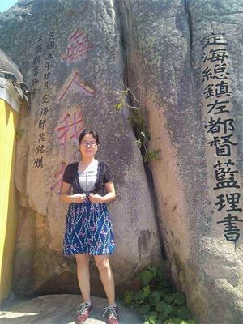
倪凯群，爱岗敬业，自工作以来所带班级一直成绩优秀，取得较高的录取率。曾获得“市教学先进个人”、“区优秀教育工作者”等荣誉，所带班级获“南京市先进班集体”称号。
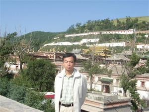
魏伟，华中科技大学教育硕士在读，曾被评为“南京市优秀青年教师”、“区学科带头人”等，曾获南京市教师基本功大赛一等奖、南京市优质课评比一等奖等。发表或获奖论文数十篇，有多篇发表在核心期刊；主持省级课题多个。
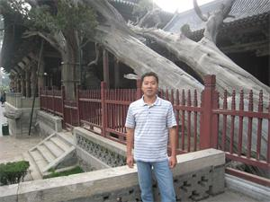
张宇，2003年毕业于黑龙江省佳木斯大学，中学一级教师，担任2015届高三（13）班班主任工作，以“智深勇沉、慧敏德馨”为培养目标。曾获“区学科带头人”、“县优秀共产党员”、“区优秀班主任”等荣誉称号。
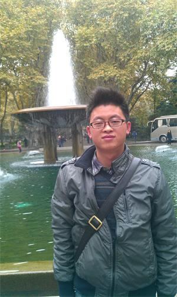
叶从雨，2009年硕士毕业，同年分配到江苏省溧水高级中学工作，目前担任高一（12）、（15）班数学教学和高一（15）班的班主任工作。
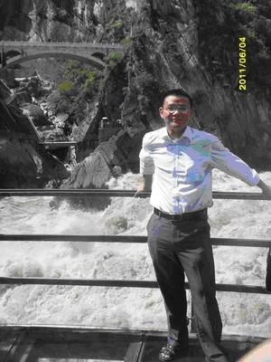
丁称兴，2006年大学本科毕业，同年分配到江苏省溧水高级中学工作，目前担任高三（5）班数学教学和高三（5）班的班主任。曾先后荣获“校优秀班主任”、“校优秀青年教师””、“校十佳教师”、“县优秀教育工作者”、“县优秀班主任”、“区教学先进个人”等荣誉称号。
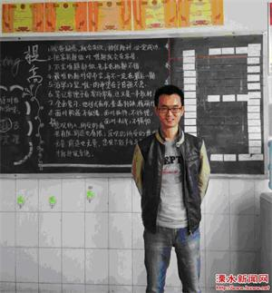
方金宝，2008年毕业于安徽师范大学，同年分配到江苏省溧水高级中学工作，目前担任高一（6）、（8）班数学教学和高一（6）班的班主任工作。曾先后荣获“校优秀班主任”、“校十佳班主任”、“校优秀青年教师””、“校十佳教师”、“区优秀班主任”、“区教坛新秀”、“南京市优秀班集体负责人”等荣誉称号。
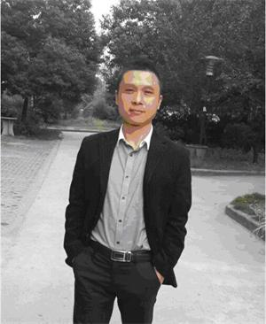
傅六根，1992年参加工作，中学英语高级教师，区学科带头人，南京市优秀青年教师。
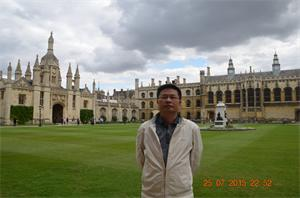
陈红宝，1989年毕业于南京师范专科学校中文系，中学语文高级教师，学生处副主任。曾先后荣获“区第四届优秀青年教师”、“南京市先进班集体”班主任、“区第四届中学语文学科带头人” “区优秀教育工作者”等荣誉称号。
陈传风，中学高级教师。